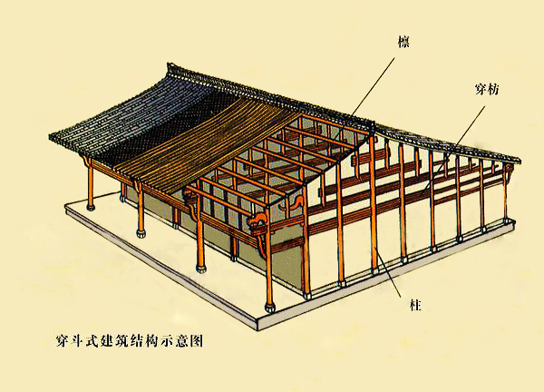
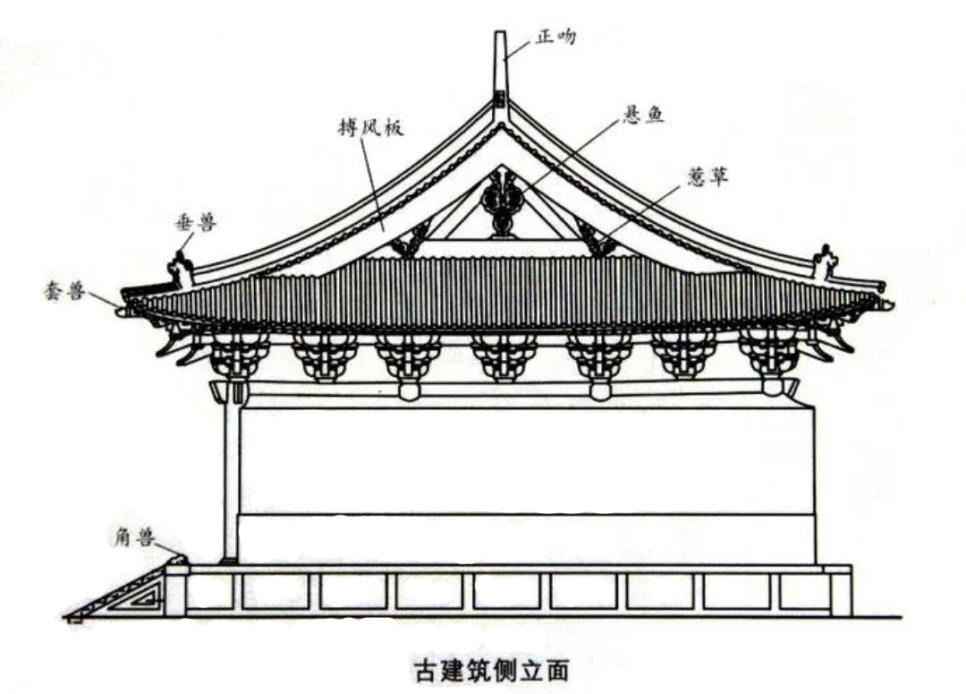
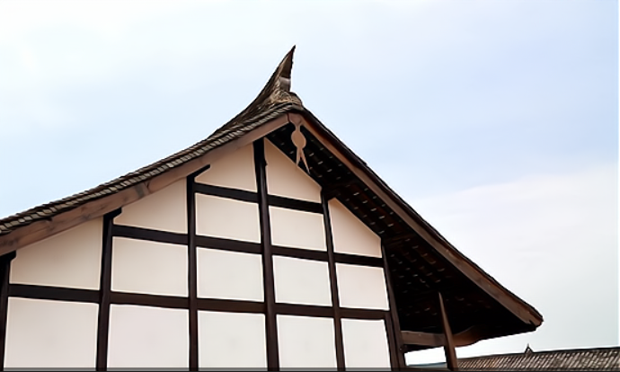
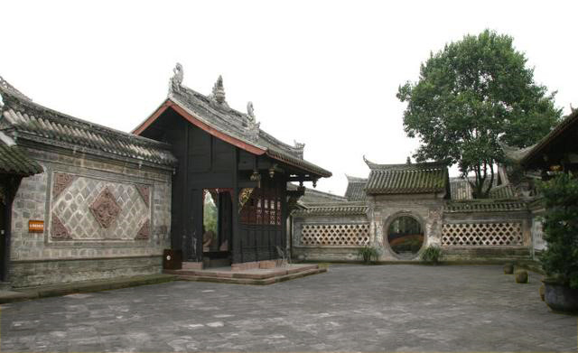

<!DOCTYPE html>
<html lang="en">
<head>
    <meta charset="UTF-8">
    <title>Structural Characteristics</title>
</head>
<body>

</body>
</html><!DOCTYPE html>
<html lang="en">

<head>
    <meta charset="UTF-8">
    <meta http-equiv="X-UA-Compatible" content="IE=edge">
    <meta name="viewport" content="width=device-width, initial-scale=1.0">
    <title>Structural Characteristics</title>
    <link rel="stylesheet" href="css/swiper-bundle.min.css">
    <link rel="stylesheet" href="css/river.css">
    <link rel="stylesheet" href="css/common.css">
    <link rel="stylesheet" href="css/animate.min.css">
    <link rel="stylesheet" href="css/nav.css">
    <link rel="stylesheet" href="css/birds.css">

    <script src="js/switchMode.js" data-type="attach"></script>
    <script src="js/river.js" type="text/javascript"></script>
    <script src="js/swiper-bundle.min.js"></script>
    <script src="js/common.js" data-type="attach"></script>

    <script src="js/jquery-3.3.1.js" data-type="attach"></script>
</head>

<body class="pageLoading">

<!-- <h1 class='head-reserve'>
    <a href='./index_en.html'>
        <span>Traditional Western Sichuan Dwellings</span>
    </a>
</h1> -->


<div class='translate-btn'>
    <a href='./Diasoira.html' >中文</a>
</div>

<main id="state" class="main">
    <!-- page_head -->
    <div class="page_head">
        <!-- <h2 class="page_head_title">川</h2> -->

        <div class="bird-container bird-container--one">
            <div class="bird bird--one"></div>
        </div>

        <div class="bird-container bird-container--two">
            <div class="bird bird--two"></div>
        </div>

        <div class="bird-container bird-container--three">
            <div class="bird bird--three"></div>
        </div>

        <div class="bird-container bird-container--four">
            <div class="bird bird--four"></div>
        </div>
        <div class="page_head_title_en">
            <span>Structural Characteristics</span>
        </div>
    </div>


    <!-- <p class="main_body_text">
        <span class="first_word">结构特点</span>
    </p>
    <div class="introduction_text">
        <section class="intro_sec">
            <p class="main_body_text">
                川西传统木结构民居以穿斗式木结构为主，通常采用两面坡式冷摊瓦屋顶和大出檐，有着“人”字垂博风板特点的悬鱼惹草结构，还有采光、透气以及排水综合功能的天井。
            </p>
        </section>
    </div> -->

    <ul class="river_list">
        <li class="river_list_item" >
            <!-- contents -->
            <div class="contents"></div>
            <!-- introduction -->
            <!-- introduction_text -->
            <section class="introduction_text">
                <section class="mountain_sec_text">
                    <p class="main_body_text">
                    <p class="main_body_text">
                        <span class="first_word">Traditional </span> wooden dwellings in
                    western Sichuan mainly rely on Chuandou style timber structure to undertake
                    the weight of the building. The two-sides gabled roof boasts three characteristics:
                    roofing without sheathing or underlayment, wide corbel , and bargeboard with herringbone-shape.
                    Besides, the courtyard of these dwellings own comprehensive functions of lighting, ventilating and draining.
                </p>
                    <p class="main_body_text">
                        </p>
                </section>
            </section>
        </li>


        <li class="river_list_item">
            <div class="river_list_image  swiper">
                <ul class="swiper-wrapper">
                    <li class="swiper-slide"></li>
                    <li class="swiper-slide"></li>
                </ul>
                <div class="swiper-pagination"></div>
                <p class="river_list_type"><span style="font-family: fz">Chuandou Style Timber Structure</span></p>
            </div>
            <div class="river_list_wrap">
                <p class="main_body_text">
                    <span class="first_word">Chuandou </span>style timer structure is also called “Column and tie construction”, referring to a grid wooden structure which is made when tiebeam(Fang), a kind of square-column crossbars, passes through the columns. With slender trunks making a well-integrated structure, Chuandou style timber structure is a load-bearing system of high flexibility, which can be adjusted according to the living needs of residents and is applicable to the change of residential space. This style of structure is composed of columns, tiebeams(Fang) and short columns. Wooden columns are directly used to support purlins and rafters. Therefore, during construction, the number of purlins needed for the roof should be determined first, and then a row of columns should be erected according to the number of purlins along the depth of the house, with one purlin on each column and rafters on each purlin. The load of roof is eventually transferred to supporting plane through purlins and columns. In order to ensure the overall stability of multiple columns, two kinds of tiebeams(Fang), Chuanfang and Doufang, are used. A frame structure is formed when Chuanfang pierces through each row of columns and connects them together. And then, every two frames are connected by Doufang to form a stable spatial frame.
                    Taking Huanglongxi Ancient Town in Chengdu as an example, most dwellings with overhanging eaves, wooden columns, black tiles and Chuandou style timber structure were built in the late Ming and early Qing Dynasties(about1600-1644), and eventually form ancient architectural

                </p>
                <!-- <div class="river_list_feature">
                    <h4 class="river_list_feature_title">主要特征</h4>
                    <dl>
                        <dt>流经地区</dt>
                        <dd>11个省、自治区、直辖市</dd>
                        <dt>注入海洋</dt>
                        <dd>东海</dd>
                    </dl>
                </div>-->
            </div>
        </li>

        <li class="river_list_item">
            <!-- img -->
            <div class="river_list_image  swiper">
                <ul class="swiper-wrapper">
                    <li class="swiper-slide"></li>
                    <li class="swiper-slide"></li>
                </ul>
                <div class="swiper-pagination"></div>
                <p class="river_list_type"><span>Big Corbel</span></p>
            </div>
            <!-- text -->
            <div class="river_list_wrap">
                <!-- <h3 class="river_list_name">黄河</h3>
                <p class="river_list_sub">the Yellow River</p> -->
                <p class="main_body_text">
                            <span
                                    class="first_word">Corbel</span>,the hood of the wall, refers to eaves that extends out of the beam frame. The cornice of hood is not only the junction of roof and wall, but also an important structural part protecting houses from moisture brought by the screw wind and drizzling rain in western Sichuan. The eaves extend far enough to block the sun's rays and prevent rainwater from washing the walls or penetrating the interior. The eaves gallery, a horizontal traffic space set under the eaves at the ground floor, provides a public activity area for local people to chat and entertain, compatible with the leisure lifestyle in western Sichuan.
                </p>
                <!-- <div class="river_list_feature">
                    <h4 class="river_list_feature_title">主要特征</h4>
                    <dl>
                        <dt>流经地区</dt>
                        <dd>9个省、自治区</dd>
                        <dt>注入海洋</dt>
                        <dd>渤海</dd>
                    </dl>
                </div>-->
            </div>
        </li>
        <li class="river_list_item">
            <!-- img -->
            <div class="river_list_image swiper">
                <ul class="swiper-wrapper">
                    <li class="swiper-slide"></li>
                    <li class="swiper-slide"></li>
                </ul>
                <div class="swiper-pagination"></div>
                <p class="river_list_type"><span>Decoration components</span></p>
            </div>
            <!-- text -->
            <div class="river_list_wrap">
                <!-- <h3 class="river_list_name">珠江</h3>
                <p class="river_list_sub">the Pearl River</p> -->
                <p class="main_body_text"><span class="first_word">Bargeboards</span> and "suspended fish" are two main practical decoration components on the roof of the traditional western Sichuan dwellings. Bargeboards are nailed to the top of purlins with battens at the both ends of the roof extending out of the gable. The bargeboards not only shield the jagged joints of purlin heads, but also protect the purlin from being exposed to the sun and rain, thus prolonging the life span of the roof. "Suspended fish" is the decoration hanging under the center of the "herringbone" bargeboard, an architectural aesthetic trend inherited by craftsmen, mostly of fish-shaped wood carvings, exquisitely carved and rich in connotation. It strengthens the integrity of the bargeboard at the gable and makes it firmer and more durable. Meanwhile, ancient dwellings are mostly in inflammable wooden structures, while fish lives in water and owns connotation of “object restricting fire”. The shape in “fish” also means “surplus year after year” and is the symbol of fertility(“yu”(fish) is homophonic to “surplus” in Chinese),  which reflects
                    people's praying for future generations. According to the records of "Ying Zao Fa Shi"( a Chinese treatise on architecture, finished in 1077 ), most of the suspended fish in Song Dynasty (960–1279) is in the petal pattern or moire pattern, which can often be seen in Sichuan rural dwellings.
                </p>
                <!-- <div class="river_list_feature">
                    <h4 class="river_list_feature_title">主要特征</h4>
                    <dl>
                        <dt>流经地区</dt>
                        <dd>6个省</dd>
                        <dt>注入海洋</dt>
                        <dd>南海</dd>
                    </dl>
                </div>
            </div> -->
        </li>
        <li class="river_list_item">
            <!-- img -->
            <div class="river_list_image  swiper">
                <ul class="swiper-wrapper">
                    <li class="swiper-slide"></li>
                    <!--                            <li class="swiper-slide"></li>-->
                </ul>
                <div class="swiper-pagination"></div>
<!--                <p class="river_list_type"><span>The Two-sides Gabled Roofing without Sheathing</span></p>-->
            </div>
            <!-- text -->
            <div class="river_list_wrap">

                <p class="main_body_text">
                    <span class="first_word">The </span>Two-sides Gabled Roofing without Sheathing
                    Traditional wooden dwellings in western Sichuan features
                    overhanging gabled roofs with two sides, covered with small black
                    tiles(one centimeter thick) without sheathing or underlayment —no roof boarding
                    is set, no adhesive materials are added, with tiles directly laying on the thin rafters.
                    Juezi and purlin are the load-bearing timbers in the construction of tile-roofed houses.
                    Purlin, used for load-bearing, is thick and straight log ; Juezi is thin rafter, about 1 to
                    1.5 cm thick, 12 cm wide, in various length. The juezi is perpendicularly fixed on the purlin with nails,
                    and the interval between juezi is appropriately less than the width of the tile, and then the tile is laid
                    on the juezi one by one(one face one back). The special “Roofing without Sheathing” has numerous advantages:
                    simple in structure, low in cost and good in ventilation. In the house, the wind ventilates into the room
                    from many tiny gaps between tiles, but residents can not feel the wind. Because through tiles, the air circulates
                    slowly and continuously, particularly when the doors and windows are closed in winter. In summer, when the
                    climate is humid and sultry, and “Roofing without Sheathing”can continuously dehumidify the dwellings by
                    discharging indoor moisture. Keeping warm in winter and cool in summer and facilitating indoor air circulation,
                    the roofing of traditional wooden dwellings in western Sichuan is a good way for residents to adapt tothe local climate.
                </p>
            </div>
        </li>

        <li class="river_list_item">
            <!-- img -->
            <div class="river_list_image swiper">
                <ul class="swiper-wrapper">
                    <li class="swiper-slide"></li>
                    <li class="swiper-slide"></li>
                </ul>
                <div class="swiper-pagination"></div>
                <p class="river_list_type"><span>Impluvium-style Courtyard</span></p>
            </div>
            <!-- text -->
            <div class="river_list_wrap">

                <p class="main_body_text"><span class="first_word">Impluvium-style Courtyard</span>
                    refers to the open space surrounded by rooms or walls in a house, generally with three main
                    functions: improving lighting, strengthening ventilation and ensuring good drainage. In western
                    Sichuan, the weather is humid and the temperature difference is small all year round. So as for
                    the big house with many rooms, the impluvium-style courtyard discharge moisture and dust outside
                    through pressure differential across the house; even there is also an extract ventilation shaft — a
                    suction opening above buildings to help form through flow in some dwellings. Because the eaves facing
                    the impluvium-style courtyard are slope-shaped, rainwater from the four-side roofs converges in the courtyard
                    and then flows out through underdrain. As water symbolizes wealth in Fengshui, this structure is also interpreted
                    as Convergence of Four in the courtyard,  meaning "keeping the wealth inside”.</p>
            </div>
        </li>

    </ul>

    </ul>

    <!-- separator_rhombus -->
    <!--            <div class="separator_rhombus">-->

    <!-- <ul class="river_other">

        <li class="river_other_item">
            <figure class="river_other_image"></figure>
            <p class="main_body_text">
                成都的黄龙溪镇，古镇内木柱青瓦的吊檐民居大多建于明末清初，街内两旁多为明清时期建筑，属于全木穿斗结构，严谨的廊坊式古代建筑样式融入其中。</p>
        </li>

        <li class="river_other_item">
            <figure class="river_other_image"></figure>
            <p class="main_body_text">廖启清故居采用的大出檐结构</p>
        </li>

    </ul> -->

    <!-- <div class="river_data separator_line"> -->

    <!--                    <section class="river_data_sec">-->

    <!--                        <p class="main_body_text">-->
    <!--                            <span-->
    <!--                                class="first_word">总的来说</span>，川西传统木结构民居合理利用了土地资源，结合了当地自然条件，做到了真正意义上的天人合一。川西的大量移民造就了极具兼容性的居住文化。-->
    <!--                        </p>-->
    <!--                        <p class="main_body_text">-->
    <!--                            穿斗木结构的柔性工艺框架体现了川西人民的创新意识与实践精神。-->
    <!--                        </p>-->
    <!--                        <p class="main_body_text">-->
    <!--                            川西民居蕴含着多彩文化，但随着城市现代化的快速发展，川西民居文化正在逐渐流失，因此我们应该采取保护与开发相结合的方式，使传统川西民居的建筑物与乡土文化特征有效地延续下去。-->
    <!--                        </p>-->
    <!-- <p class="main_body_text">
        第二类创作是河流文化层次的书写，祈水、镇水、歌谣、庙宇、造船等等。这一类文本 更多的是与第一个层次兼而有之，既有直接的江河生活，也有江河文化。
    </p>

    <p class="main_body_text">
        第三类是修辞和象征意义上的江河。一条河滋润一块土地，河流两岸人的命运都与河流 相连。但这类文本并不直接把江河作为书写元素，江河只是在文本中若隐若现，或左或
        右，更多的是地理上的意义和符号。
    </p> -->

    <!--                    </section>-->
    </div>

    <!--                <div class="river_footer_img">-->
    <!--                    -->
    <!--                </div>-->
    </div>
    </div>

</main>

<!-- footer -->
<footer id="global-footer">
    <div class="container">
        <p class="footer-text">Structural Characteristics<br> Culture Connotation of the Traditional Western Sichuan Dwellings</p>
        
    </div>
</footer>

<div id="loader">
    <div id="loadBar" class="animated slideInLeft"></div>
</div>

<div class="scrollIndicator"></div>

<script>

    //Scroll事件，对每一个image_single的img添加fadeInUp动画
    $(function () {
        this.handleScroll = function () {
            let currentScroll = window.pageYOffset + window.innerHeight;
            // console.log(currentScroll);
            //$(".imgae_single img")是一个对象数组
            let el = $(".image_single img");
            // console.log(el);
            for (let i = 0; i < el.length; i++) {
                if (el[i].offsetTop < currentScroll) {
                    $(el[i]).addClass('animated fadeInUp');
                    // console.log('success!');
                } else {
                    $(el[i]).removeClass('fadeInUp');
                }
            }
        }
        window.addEventListener('scroll', this.handleScroll, true);
    })

    //高亮事件
    $(function () {
        //鼠标进入的时候,其他的li标签透明度：0.5
        $(".image_multi li").hover(function () {
            $(this).siblings().stop().fadeTo(400, 0.5);
        }, function () {
            // 鼠标离开，其他li 透明度改为 1
            $(this).siblings().stop().fadeTo(400, 1);
        })
    });


</script>
</body>

</html>